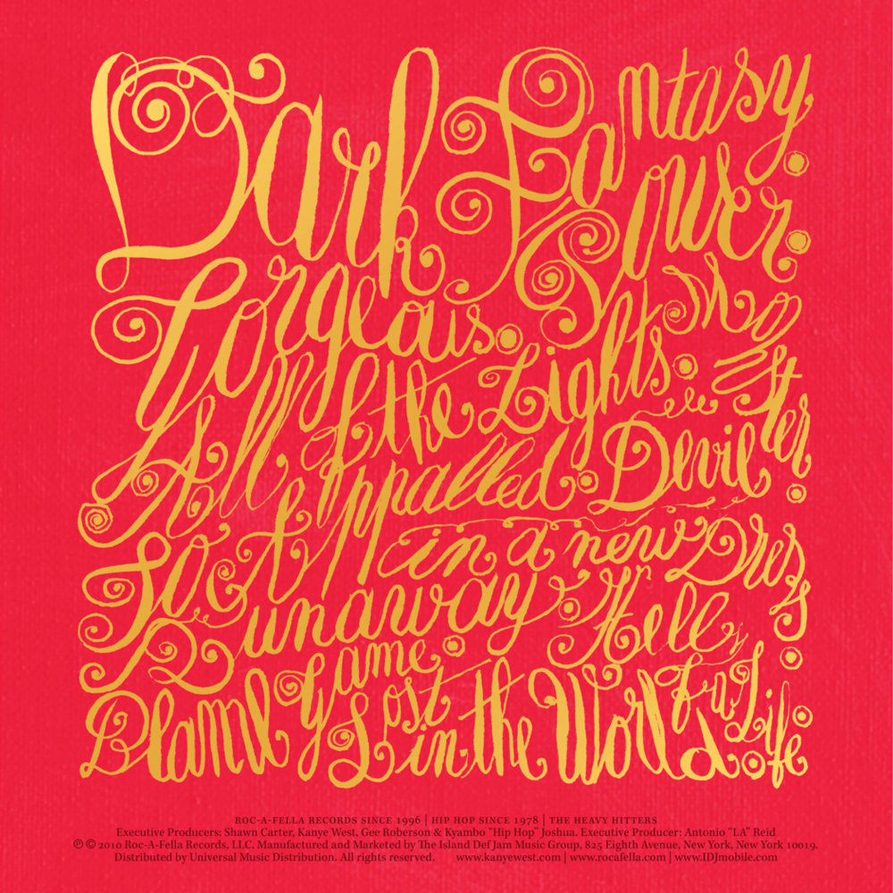
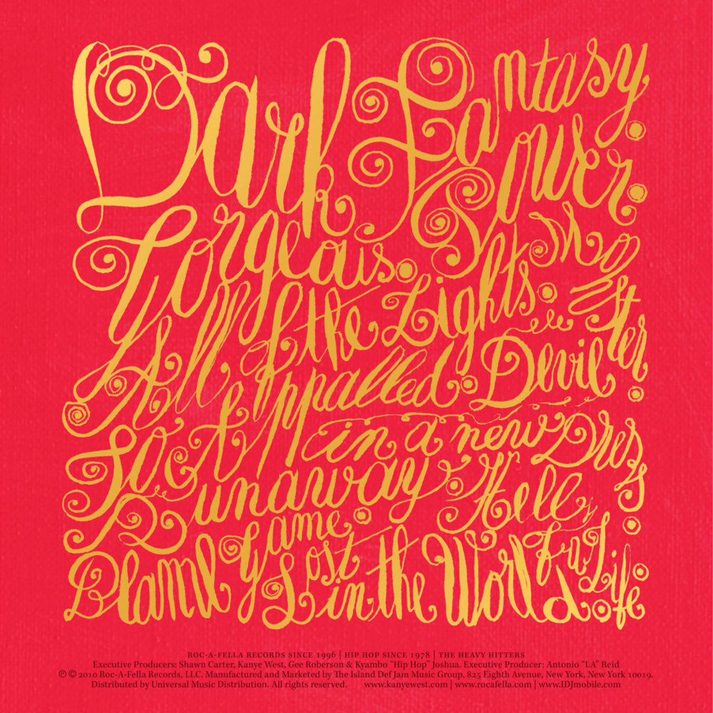

Book
 

My Beautiful Dark Twisted Fantasy
My Beautiful Dark Twisted Fantasy is the fifth studio album by American rapper Kanye West, released on November 22, 2010, by Roc-A-Fella Records. Following a period of public and legal controversy, West retreated to a "self-imposed exile" in Hawaii in 2009. There, he worked on the album in a communal recording environment that involved numerous contributing musicians and producers. The album features guest appearances from Bon Iver, Jay-Z, Pusha T, Rick Ross, Kid Cudi, Nicki Minaj, John Legend and more.
Production was led by West himself, alongside a variety of high-profile record producers including Mike Dean, No I.D., Jeff Bhasker, RZA, S1, Bink and DJ Frank E. Noted by critics for its maximalist aesthetic, opulent production quality, and dichotomous themes, My Beautiful Dark Twisted Fantasy incorporates aspects of West's previous works, including soul, baroque, electro, and symphonic styles. The album deals with themes of excess and celebrity, and explores such issues as consumer culture, race, and the idealism of the American Dream.
To promote the album, West released free songs through his GOOD Fridays series and four singles: the Billboard hits "Power", "Monster", and "Runaway", and the international hit "All of the Lights". It was also promoted with a short film set to the record's music, Runaway. The album debuted at number one on the Billboard 200 and eventually sold 1,032,000 copies in the United States. A widespread critical success, it was named the best album of 2010 by many publications and has since appeared on several lists ranking the greatest albums of all time.